ONE CONNECTED SE WORKSPACE
From evidence to action, in one pulse.
PULSE turns the signed-in user's MSX portfolio, RAIN operating profile and Microsoft 365 evidence into verified weekly updates, role-relevant execution, complete opportunity workspaces and an evidence-grounded FY27 Connect—without hiding the decisions or writing silently.
Already have access? Open Production Power App →
✓ Signed-in-user context✓ Guarded MSX actions✓ Evidence lineage
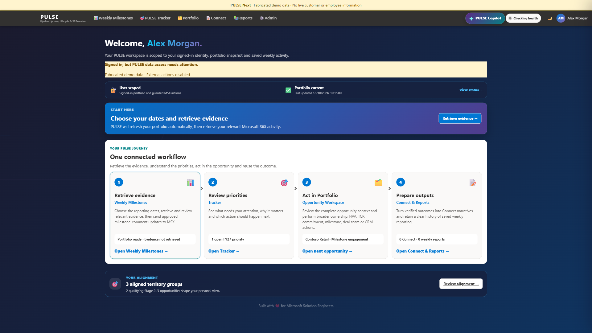
THE PULSE JOURNEY
One workflow, six connected workspaces
Retrieve the evidence, understand the priorities, work in the opportunity and retain a trustworthy record.
Weekly Milestones
Retrieve, review and route evidence before preparing guarded updates.
PULSE Tracker
Prioritise role-specific personal actions, team decisions and evidence-backed opportunity signals.
Portfolio
Inspect accounts, opportunities, milestones, ownership and deal-team coverage.
Connect
Prepare the scheduled conversation from verified evidence and FY27 measures.
Reports
Reopen saved Weekly and Connect versions without regenerating history.
PULSE Copilot
Ask read-only questions about risk, evidence gaps and the next best action.
WEEKLY MILESTONES
Prove the work before writing the update.
Weekly does far more than draft prose. It retrieves activity for an exact period, distinguishes customer outcomes from context, links evidence to the correct milestone, builds an editable draft and then prepares a guarded batch of append-only MSX updates.
- Retrieve: refresh the signed-in portfolio and collect evidence for the selected dates.
- Decide: verify, exclude or route every substantive contribution to Weekly / MSX, Account holding or Connect.
- Generate: create milestone progress, outcomes, blockers, next steps and CRM-ready commentary from approved evidence.
- Push safely: review every destination, append-only comment, warning and task before explicitly confirming the MSX batch.
THE RESULTA complete evidence-to-MSX workflow—not a generic status generator.
Weekly Milestones guide →


PULSE TRACKER
Different decisions, one evidence-led population.
Tracker is the operational engine of PULSE. It resolves the signed-in user's operating profile from RAIN Qualifier 2, then evaluates the relevant Stage 2–3 population through three distinct lenses so personal work, team decisions and discovery signals never become one misleading queue.
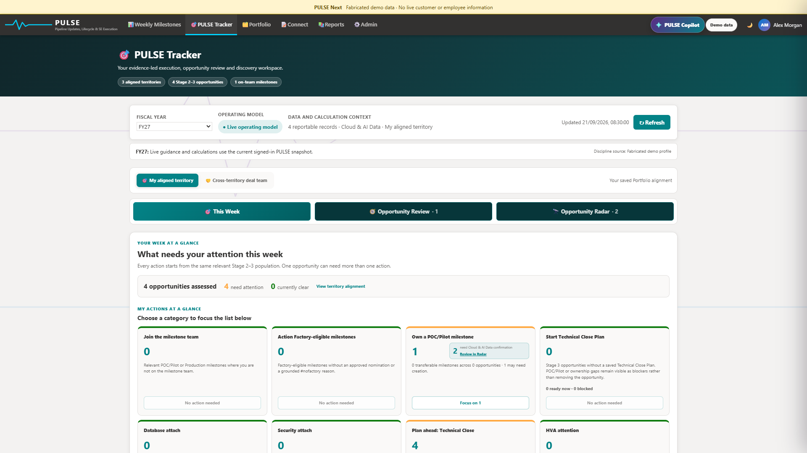
EXECUTE
This Week
Prioritises the work only the signed-in SE can action now: join milestone teams, confirm ownership, create or advance HVA, close attach gaps and start Technical Close.
- One relevant Stage 2–3 denominator
- Focus First opportunity ranking
- Stage 2 plan-ahead and Stage 3 start-now TCP lifecycle
- Database, Security and Factory attach actions
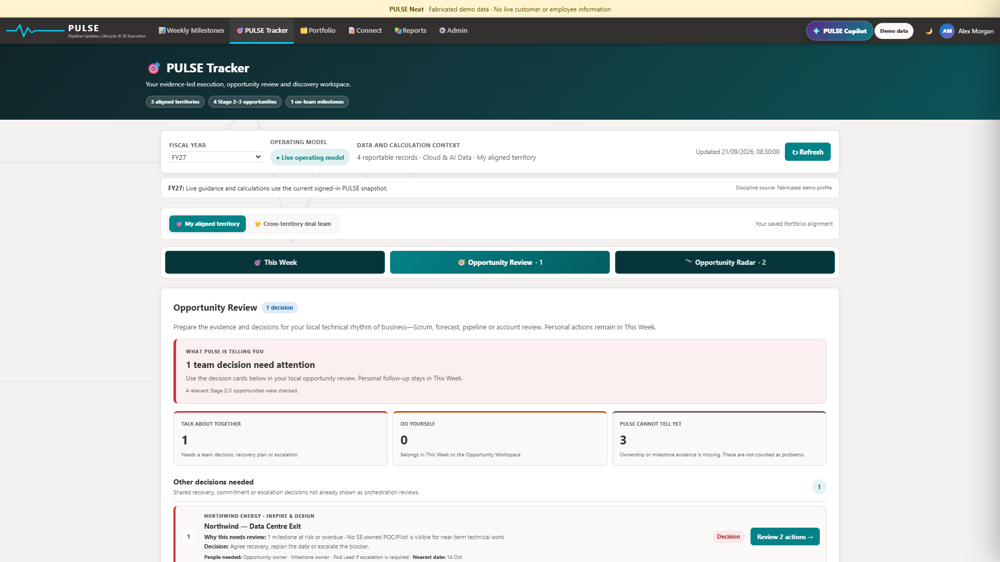
ORCHESTRATE
Opportunity Review
Surfaces the shared decisions, recovery plans and escalations that belong in Scrum, forecast, pipeline or account-team conversations.
- Separates team decisions from personal follow-up
- Explains why each opportunity needs attention
- Shows people needed, nearest dates and missing evidence
- Retains “cannot tell yet” rather than inventing certainty
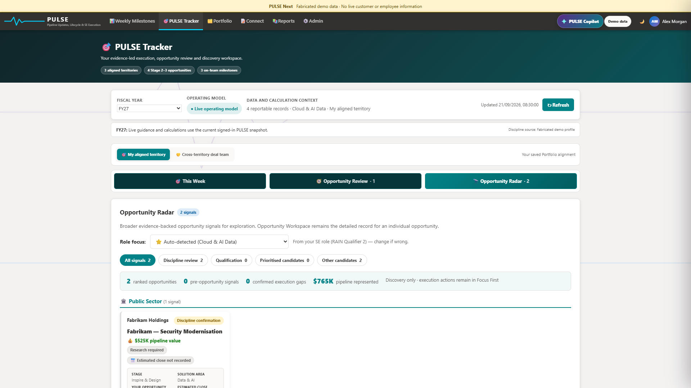
DISCOVER
Opportunity Radar
Ranks broader evidence-backed opportunity and account signals while protecting pipeline quality and preserving the distinction between discovery and execution.
- Role-aware discipline review
- Pipeline value and evidence strength
- Account-level signals retained without false attribution
- Clear qualification asks and research requirements
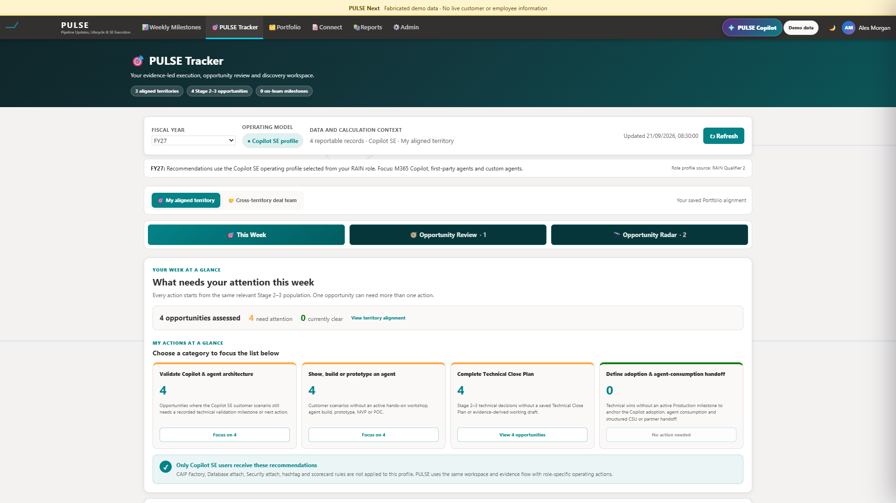
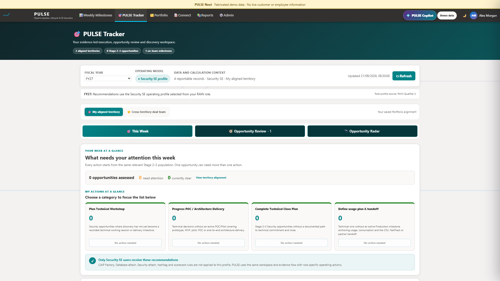
Explore the complete Tracker, market-context research and Technical Close deep dive →
PORTFOLIO & OPPORTUNITY WORKSPACE
Move from the signal to the exact record.
Portfolio is the trusted account and opportunity map behind every PULSE calculation. It preserves legal account hierarchy, personal territory alignment and cross-territory engagement, then opens the exact opportunity record where technical execution happens.
- Saved territory alignment without hiding the complete evidence-matching portfolio
- Parent, child and legally distinct account relationships
- Opportunity, milestone, ownership and deal-team coverage
- Guarded join-team, POC/Pilot ownership, attach and Technical Close actions
- Three explicit exception routes: current PULSE evidence, fresh Microsoft 365 search or a grounded manual reason
THE RESULTNo more jumping between fragmented views to understand who owns the technical outcome.
Explore the complete Portfolio & Opportunity Workspace →
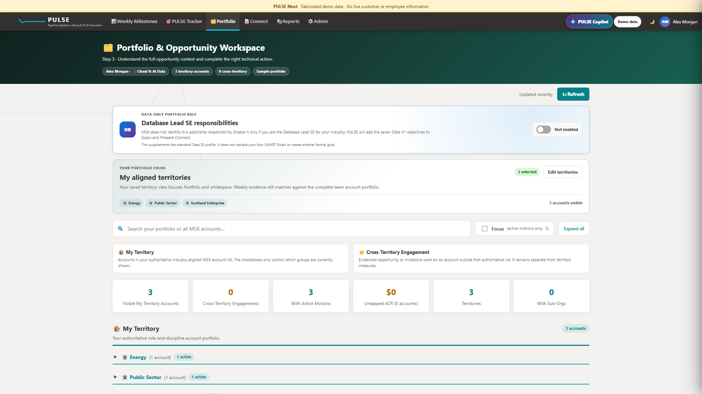
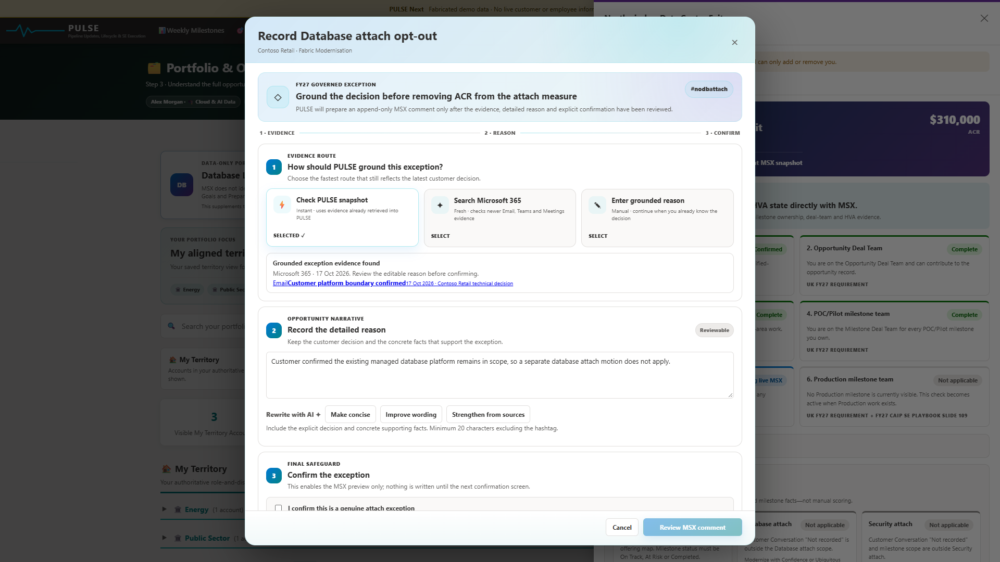
FY27 CONNECT
Prepare the conversation—not just the prose.
Connect turns the whole year’s verified delivery into a coherent, defensible conversation. It uses the authoritative guidance for the signed-in CAIP, AIBS or Security profile, calculates the correct evidence window and keeps source proof, goals, workstreams, customer value and attribution visible before any narrative is generated.
- Prepare: confirm the conversation, deadline, discipline context and exactly three business bets.
- Prove: review new contributions, attribution-pending customer work and verified evidence history.
- Measure: connect evidence to all five FY27 goals, financial context, HVA, Technical Win, workstreams and learning.
- Tell the story: generate, edit and save a private versioned narrative without rewriting history.
THE RESULTA Connect grounded in what the SE actually delivered—not a last-minute memory exercise.
Detailed Connect guide →


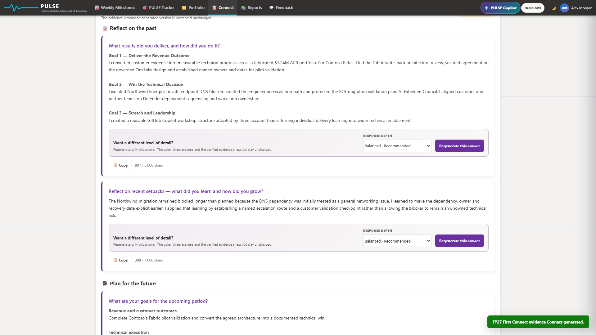
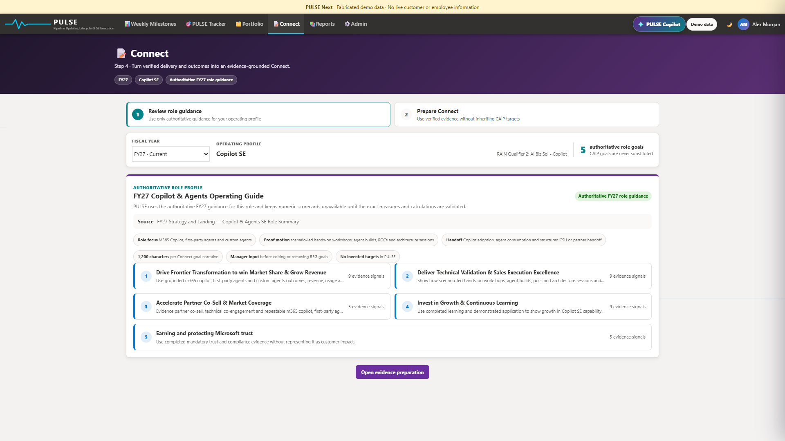
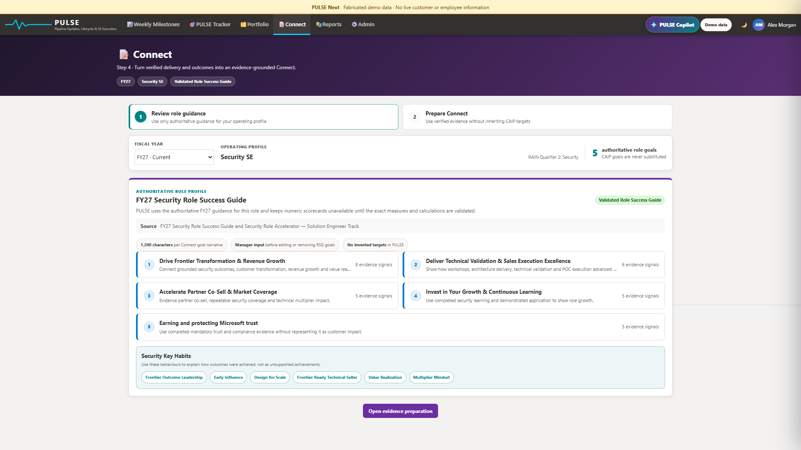
REPORTS & VERSION HISTORY
Keep the evidence and the decision that existed at the time.
PULSE does not silently regenerate history from today’s changed portfolio. Reports reopens the saved Weekly period or private Connect version with its originating evidence and snapshot context intact.
- Saved Weekly drafts and reviewed milestone updates
- Private versioned Connect narratives
- Historical portfolio-snapshot protection
- Clear separation between current live state and saved evidence
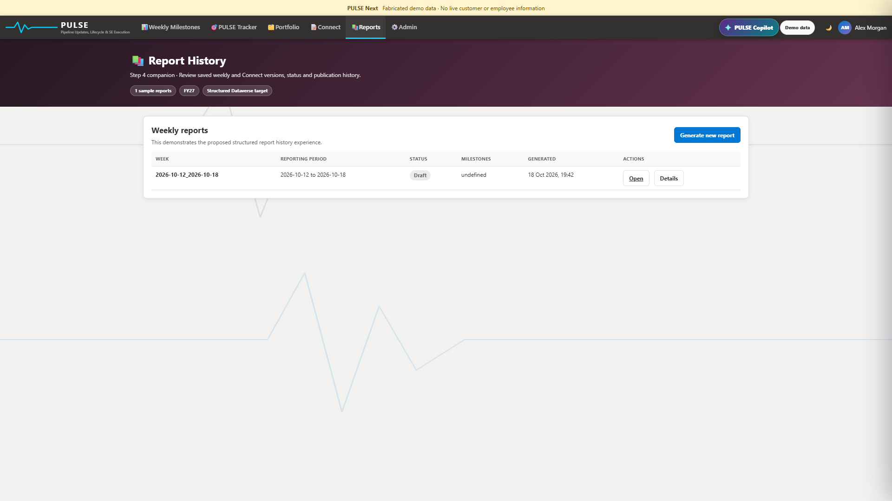
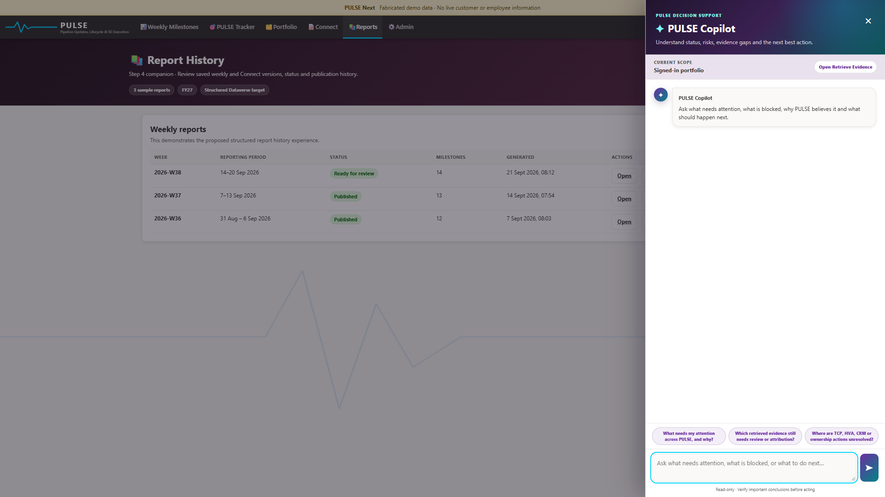
PULSE COPILOT
Decision support from every page.
Ask what needs attention, what is blocked, why PULSE believes it and what should happen next. Answers are grounded in the current signed-in PULSE state, expose their reasoning and route the SE back to the right workspace. Copilot remains read-only and never bypasses a guarded action.
- Portfolio-wide priority and blocker questions
- Evidence, attribution and readiness explanations
- Contextual next actions from every page
- No silent CRM or MSX execution
PRODUCT WALKTHROUGHS
See the current Power App in action
Recorded from the current Production interface at desktop resolution using fabricated customers, opportunities, evidence and commercial values.
Weekly Milestones
Period selection, evidence routing and guarded update preparation.
PULSE Tracker
This Week, Opportunity Review and Opportunity Radar.
FY27 Connect
Preparation context, evidence review, generation and PULSE Copilot.
Portfolio & Opportunity Workspace
Account hierarchy, readiness gates, attach, milestones, HVA and Technical Close.
READY TO USE PULSE?
Open the signed-in Power App.
No agent package, sideloading or link code. Select your work account and begin with the workflow you need.